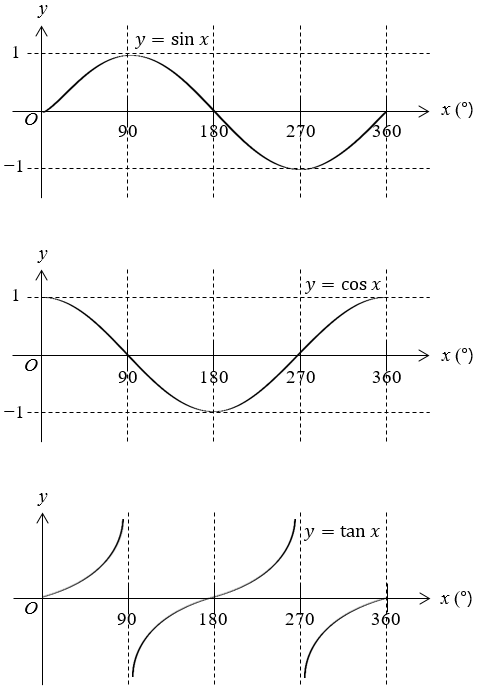
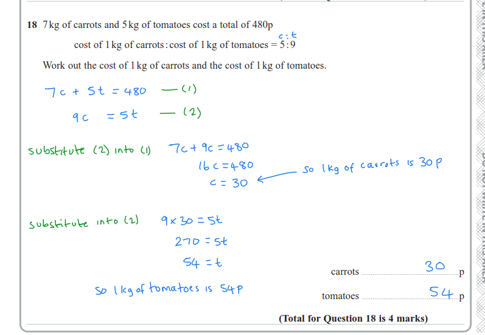
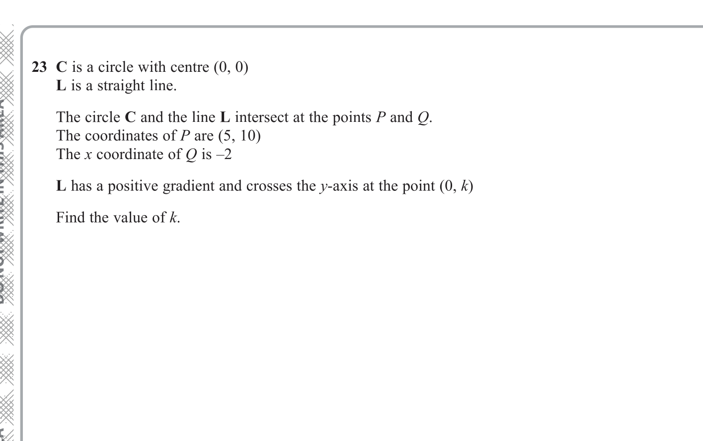

Question 1
Solve \(\sin x = \frac{1}{2}\) for \(0° \le x \le 360°\).
Sine is \(\frac{1}{2}\) at \(30°\) and \(150°\).
\[x=30°,\ 150°\]
Hi Angelica. I've updated this page by making the following changes. I've added a lot of stuff so you can choose how much you want to do. Good luck in the exam! :)
The diagram below shows a circle is the unit circle. The unit circle means the circle with radius 1. The equation for the unit circle is \(x^2 + y^2 = 1\).
\(P(x,y)\) means a general point that lies on the circle and the coordinates of that point are \(x\) and \(y\).
To solve what \(x\) and \(y\) are for \(P(x,y)\), you only need to know the angle. Then you can use \(x=\cos(A)\) and \(y=\sin(A)\), where \(A\) is the angle.
For example, if the angle \(A=30°\), then \(x=\cos(30°)=\frac{\sqrt{3}}{2}\) and \(y=\sin(30°)=\frac{1}{2}\). Then:
\[P(x,y) = (\cos(30°),\sin(30°)) = \left(\frac{\sqrt{3}}{2}, \frac{1}{2}\right)\]
The diagram shows all the \(P(x,y)\) for all the special angles.

In general, the x and y coordinates of points that are on opposite sides of the circle to each other are the opposite sign.
The coordinates of angle \(180°\) are the negative of the coordinates of angle \(0°\). For angle \(0°\), \(P(x,y)=(1,0)\). For angle \(180°\), \(P(x,y)=(-1,0)\).
Angle \(270°\) is the negative of angle \(90°\). For angle \(90°\), \(P(x,y)=(0,1)\). For angle \(270°\), \(P(x,y)=(0,-1)\).
For all the other special angles, the denominator of the fractions is \(2\), so you only need to remember the pattern of numerators.
The numerators are \(\sqrt{3}\), \(\sqrt{2}\), or \(1\).
Look at angles \(30°\), \(45°\), and \(60°\): the numerators for the \(x\)-coordinate decrease in order \(\sqrt{3} \rightarrow \sqrt{2} \rightarrow 1\).
Now look at angles \(120°\), \(135°\), \(150°\): the \(x\)-numerators increase \(1 \rightarrow \sqrt{2} \rightarrow \sqrt{3}\).
Then for \(210°\), \(225°\), \(240°\) they decrease again, and for \(300°\), \(315°\), \(330°\) they increase again.
The \(y\)-coordinate numerators do the opposite pattern: when \(x\)-numerators increase, \(y\)-numerators decrease, and vice versa.
For angles \(30°\), \(45°\), \(60°\), both \(x\) and \(y\) are positive. The opposite angles \(210°\), \(225°\), \(240°\) have both negative.
For angles \(120°\), \(135°\), \(150°\), \(x\) is negative and \(y\) is positive. The opposite angles \(300°\), \(315°\), \(330°\) have \(x\) positive and \(y\) negative.
\[\sin(x)=-\frac{1}{2} \text{ when } x=210° \text{ or } x=330°\]

The trig graphs are created directly from the unit circle diagram above. For every angle \(A\) going all the way round the circle from \(0°\) up to (but not including) \(360°\), you calculate the coordinates of \(P(x,y)\) and plot them.
For the \(\sin(A)\) graph, the horizontal axis is the angle \(A\) and the vertical axis is the \(y\)-coordinate of \(P(x,y)\). In other words, to draw the graph for \(\sin(A)\),for each angle you ask: what is the vertical distance from the x axis to the point \(P\)? This distance is then plotted on the \(\sin(A)\) graph. At \(0°\) the point is at \(y=0\), it rises to \(y=1\) at \(90°\), falls back to \(y=0\) at \(180°\), drops to \(y=-1\) at \(270°\), and returns to \(y=0\) at \(360°\) — which gives you the familiar wave shape.
For the \(\cos(A)\) graph, the horizontal axis is still the angle \(A\), but now the vertical axis is the \(x\)-coordinate of \(P(x,y)\). To draw the \(\cos(A)\) graph, for each angle you ask: what is the horizontal distance from the y axis to the point \(P\)? This distance is then plotted on the \(\cos(A)\) graph. At \(0°\) the point is at \(x=1\), it falls to \(x=0\) at \(90°\), reaches \(x=-1\) at \(180°\), rises back through \(x=0\) at \(270°\), and returns to \(x=1\) at \(360°\). This is the same wave shape as sine, just shifted \(90°\) to the left. This happens because the circle is symetrical.
For the \(\tan(A)\) graph, you calculate \(\tan(A) = \dfrac{\sin(A)}{\cos(A)}\) for every angle. Because \(\cos(A)=0\) at \(90°\) and \(270°\), the value of \(\tan(A)\) is undefined there and the graph has vertical asymptotes at those angles.
Try each one first. Then reveal the answer.
Solve \(\sin x = \frac{1}{2}\) for \(0° \le x \le 360°\).
\[x=30°,\ 150°\]
Solve \(\cos x = -\frac{\sqrt{3}}{2}\) for \(0° \le x \le 360°\).
\[x=150°,\ 210°\]
Solve \(\tan x = 1\) for \(0° \le x \le 360°\).
\[x=45°,\ 225°\]
Solve \(2\sin x=-\sqrt{3}\) for \(0° \le x \le 360°\).
\[x=240°,\ 300°\]
Solve \(3\cos x+3=0\) for \(0° \le x \le 360°\).
\[x=180°\]
Solve \(\tan x=-\sqrt{3}\) for \(0° \le x \le 360°\).
\[x=120°,\ 300°\]
Solve \(4\sin x-2=0\) for \(0° \le x \le 360°\).
\[x=30°,\ 150°\]
Solve \(2\cos x=\sqrt{2}\) for \(0° \le x \le 360°\).
\[x=45°,\ 315°\]
Solve \(\sin x=0\) for \(0° \le x \le 360°\).
\[x=0°,\ 180°,\ 360°\]
Solve \(2\sin x+\cos x=0\) for \(0° \le x \le 360°\).
\[x\approx 153.4°,\ 333.4°\]
Here is the exam question image:

Let:
\[c = \text{cost of 1 kg of carrots (in pence)}\]
\[t = \text{cost of 1 kg of tomatoes (in pence)}\]
From the question:
\[7c + 5t = 480\]
The ratio \(c:t = 5:9\) means:
\[\frac{t}{c} = \frac{9}{5}\]
Cross multiply:
\[9c = 5t\]
Now substitute into the first equation.
Since \(5t=9c\), replace \(5t\) in \(7c+5t=480\) with \(9c\):
\[7c + 9c = 480\]
\[16c = 480\]
\[c = 30\]
Now use \(9c=5t\):
\[9(30)=5t\]
\[270=5t\]
\[t=54\]
Final answer:
\[\text{Carrots} = 30\text{p per kg}\]
\[\text{Tomatoes} = 54\text{p per kg}\]
Try each one first, then reveal the answer.
Let \(a\) be the cost of 1 kg of apples (pence) and \(b\) be the cost of 1 kg of bananas (pence).
Given \(4a + 3b = 330\) and \(a:b = 3:5\), find \(a\) and \(b\).
\[\boxed{a=\frac{110}{3}\text{p},\quad b=\frac{550}{9}\text{p}}\]
Let \(m\) be the cost of 1 kg of mangoes (pence) and \(o\) be the cost of 1 kg of oranges (pence).
Given \(6m + 4o = 600\) and \(m:o = 2:3\), find \(m\) and \(o\).
\[\boxed{m=50\text{p},\quad o=75\text{p}}\]
Here is the exam-style diagram:

Since the circle has centre \((0,0)\), any point on the circle is the same distance from the origin.
Point \(P=(5,10)\) is on the circle, so first find the radius squared:
\[r^2 = 5^2 + 10^2\]
\[r^2 = 25 + 100 = 125\]
So the equation of the circle is:
\[x^2 + y^2 = 125\]
Point \(Q\) is also on the circle and has \(x=-2\).
Substitute into the circle equation:
\[(-2)^2 + y^2 = 125\]
\[4 + y^2 = 125\]
\[y^2 = 121\]
\[y = \pm 11\]
So \(Q\) could be:
\[(-2,11)\text{ or }(-2,-11)\]
Now use the information that line \(L\) has a positive gradient. Test both possibilities with \(P=(5,10)\).
So:
\[Q=(-2,-11)\]
Find the equation of the line through \(P=(5,10)\) with gradient \(3\).
Use:
\[y=3x+k\]
Substitute \(P\):
\[10=3(5)+k\]
\[10=15+k\]
\[k=-5\]
Answer:
\[\boxed{k=-5}\]
Hide/reveal answers as usual after attempting each one.
A circle has centre \((0,0)\) and passes through \(A=(3,-4)\).
Point \(B\) is on the circle and has \(x=-3\).
The line through \(A\) and \(B\) has negative gradient. Find \(B\) and the line equation in the form \(y=mx+c\).
\[\boxed{B=(-3,4),\quad y=-\frac{4}{3}x}\]
A circle has centre \((0,0)\) and passes through \(P=(8,6)\).
Point \(Q\) is on the circle and has \(x=-8\).
The line \(PQ\) has positive gradient. Find \(Q\) and the equation of \(PQ\).
\[\boxed{Q=(-8,-6),\quad y=\frac{3}{4}x}\]
Find the equation of the line through \((2,-1)\) perpendicular to \(y=\frac{1}{2}x+4\).
\[\boxed{y=-2x+3}\]
Find the equation of the line through \((-4,5)\) perpendicular to \(3y-6x=9\).
\[\boxed{y=-\frac{1}{2}x+3}\]
For the circle \(x^2+y^2=25\), find the equation of the tangent at \((3,4)\).
\[\boxed{y=-\frac{3}{4}x+\frac{25}{4}}\]
For the circle \((x-1)^2+(y+2)^2=16\), find the equation of the tangent at \((5,-2)\).
\[\boxed{x=5}\]
A composite function means applying one function and then feeding the result straight into another. The notation \(fg(x)\) means apply \(g\) first, then apply \(f\) to the result:
\[fg(x) = f\bigl(g(x)\bigr)\]
Let \(f(x) = 2x + 1\) and \(g(x) = x^2\).
\[\boxed{fg(x) = 2x^2 + 1, \qquad gf(x) = (2x+1)^2}\]
Let \(f(x) = x + 5\) and \(g(x) = 2x\). Find \(fg(3)\).
\[\boxed{fg(3) = 11}\]
Let \(f(x) = 3x - 2\) and \(g(x) = x + 4\). Find \(gf(x)\) in simplified form.
\[\boxed{gf(x) = 3x + 2}\]
The inverse function \(f^{-1}(x)\) undoes \(f\). If \(f\) maps \(a\) to \(b\), then \(f^{-1}\) maps \(b\) back to \(a\).
Method to find \(f^{-1}(x)\):
\[\boxed{f^{-1}(x) = \frac{x+2}{3}}\]
\[\boxed{f^{-1}(x) = \frac{3x-1}{2}}\]
These are aimed at GCSE Higher level. Start with the easy set, then move to the hard and challenging questions. Reveal answers only after a proper attempt.
Let \(f(x)=2x+5\) and \(g(x)=x-3\). Find \(fg(x)\).
\[\boxed{fg(x)=2x-1}\]
Let \(f(x)=3x-1\) and \(g(x)=x^2\). Find \(gf(x)\).
\[\boxed{gf(x)=(3x-1)^2}\]
Let \(f(x)=x+4\) and \(g(x)=2x\). Find \(fg(6)\).
\[\boxed{fg(6)=16}\]
Find \(f^{-1}(x)\) for \(f(x)=4x+7\).
\[\boxed{f^{-1}(x)=\frac{x-7}{4}}\]
Find \(f^{-1}(x)\) for \(f(x)=\frac{x-5}{3}\).
\[\boxed{f^{-1}(x)=3x+5}\]
Let \(f(x)=2x-3\) and \(g(x)=x^2+1\). Find \(fg(x)\) in simplified form.
\[\boxed{fg(x)=2x^2-1}\]
Let \(f(x)=x+2\) and \(g(x)=3x-4\). Find both \(fg(x)\) and \(gf(x)\).
\[\boxed{fg(x)=3x-2,\qquad gf(x)=3x+2}\]
Let \(f(x)=x^2\) and \(g(x)=x-1\). Find \(fg(5)\).
\[\boxed{fg(5)=16}\]
Find \(f^{-1}(x)\) for \(f(x)=5-2x\).
\[\boxed{f^{-1}(x)=\frac{5-x}{2}}\]
Find \(f^{-1}(x)\) for \(f(x)=\frac{3x+4}{2}\).
\[\boxed{f^{-1}(x)=\frac{2x-4}{3}}\]
Given \(f(x)=2x+1\), find \(f^{-1}(7)\).
\[\boxed{f^{-1}(7)=3}\]
Let \(f(x)=3x-2\) and \(g(x)=x^2\). Find \(gf(-1)\).
\[\boxed{gf(-1)=25}\]
Let \(f(x)=x+1\) and \(g(x)=2x^2\). Find \(fg(x)\).
\[\boxed{fg(x)=2x^2+1}\]
Let \(f(x)=x^2+4\) and \(g(x)=x-2\). Find \(gf(x)\).
\[\boxed{gf(x)=x^2+2}\]
Show that \(f(f^{-1}(x))=x\) for \(f(x)=3x+6\).
\[\boxed{f(f^{-1}(x))=x}\]
Let \(f(x)=2x+3\) and \(g(x)=x^2\). Solve \(fg(x)=11\).
\[\boxed{x=\pm 2}\]
Let \(f(x)=x-4\) and \(g(x)=x^2+1\). Solve \(gf(x)=10\).
\[\boxed{x=1 \text{ or } x=7}\]
Given \(f(x)=3x-5\), solve \(f^{-1}(x)=4\).
\[\boxed{x=7}\]
Let \(f(x)=2x+1\) and \(g(x)=x^2\). Solve \(fg(x)=gf(x)\).
\[\boxed{x=0 \text{ or } x=-2}\]
Let \(f(x)=\frac{x+1}{2}\). Find \(ff(x)\), then solve \(ff(x)=x\).
\[\boxed{ff(x)=\frac{x+3}{4},\qquad x=1}\]
These questions need more than one skill. You often need to factorise first, simplify, and then rearrange. For index questions, name the exact index rule each time you use it.
Factorising patterns:
\[ax^2 + bx + c\text{ (try factorising or completing square)}\]
\[x^2 - a^2 = (x-a)(x+a)\]
Index rules we will use:
\[x^{-n} = \frac{1}{x^n}\]
\[(x^m)^n = x^{mn}\]
\[\left(x^m\right)^{\frac{1}{m}} = x\]
\[y = \frac{x^2 + 6x + 9}{x+3}\]
Make \(x\) the subject.
\[y = \frac{2x^2 + 12x}{4}\]
Make \(x\) the subject.
\[x = -3 \pm \sqrt{2y+9}\]
\[y = \frac{\frac{2x^2}{3} + 4x + 6}{2}\]
Make \(x\) the subject.
\[x = -3 \pm \sqrt{3y}\]
\[y = 3x^{-2} + 1\]
Make \(x\) the subject.
\[x = \pm\sqrt{\frac{3}{y-1}}\]
\[y = 2x^{3/2} - 4\]
Make \(x\) the subject.
\[x = \left(\frac{y+4}{2}\right)^{2/3}\]
These are harder. Try each one first, then reveal the working.
Look for this pattern: \(y = x^2 + bx\) (no constant term on the right side)
Why it works here: When there's no constant added to the \(x\) terms, completing the square is clean and direct. You don't need to rearrange \(y\) separately first.
Remember: If you see \(x^2 + \text{(something with } x \text{)} \) with no number by itself, think "complete the square immediately" — it's often the quickest path.
Make \(x\) the subject:
\[y = x^2 + 7x\]
\[x^2 + 7x + \left(\frac{7}{2}\right)^2 = y + \left(\frac{7}{2}\right)^2\]
\[\left(x+\frac{7}{2}\right)^2 = y + \frac{49}{4}\]
\[x+\frac{7}{2} = \pm\sqrt{y + \frac{49}{4}}\]
\[x = -\frac{7}{2} \pm \sqrt{y + \frac{49}{4}}\]
Make \(x\) the subject:
\[y = \frac{x^2 - 9}{x + 3}\]
\[x = y + 3\]
Make \(x\) the subject:
\[y = \frac{2x^2 + 12x}{4}\]
\[x = -3 \pm \sqrt{2y+9}\]
Make \(x\) the subject:
\[y = 5x^{-3}\]
\[x = \sqrt[3]{\frac{5}{y}}\]
Make \(x\) the subject:
\[y = 4x^{5/2} - 1\]
\[x = \left(\frac{y+1}{4}\right)^{2/5}\]
Make \(x\) the subject:
\[y = x^{1/2} + x^{-1/2}\]
\[x = \left(\frac{y \pm \sqrt{y^2-4}}{2}\right)^2\]
Make \(x\) the subject:
\[y = \frac{x^2 + 6x + 9}{x+3}\]
\[x = y - 3\]
Make \(x\) the subject:
\[y = \frac{3x^2 + 12x + 12}{x+2}\]
\[x = \frac{y}{3} - 2\]